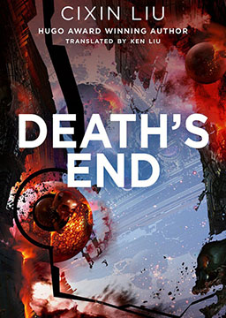

三体3: 死神永生 (Deaths End)
作者：刘慈欣 (Cixin Liu) [中国]
在地球人类接近灭亡之际，只有程心和艾AA两个幸存者乘坐光速飞船离开。罗辑成为设置于冥王星的地球文明博物馆的“守墓人”，她们在冥王星带走人类文明的精华。在云天明送的恒星的一颗行星上，程心遇到关一帆且探讨了宇宙降维的真相，然而超乎一切之上的力量要求宇宙归零重生，在黑域中穿越长达1800万年的时空……程心没有等到云天明到来，和关一帆在小宇宙中短暂居住后重新进入大宇宙生活
难度：
大学
长度：
长篇
分类：
科幻
第一部 第一章: 公元1453年5月，魔法师之死 May 1453, C.E. The Death of the Magician
第一部 第二章: 危机纪元元年，生命选项 Crisis Era, Year 1, The Option for Life
第一部 第三章: 危机纪元4年，云天明 Crisis Era, Year 4, Yun Tianming
第一部 第四章: 危机纪元，1-4年，程心 Crisis Era, Years 1–4, Cheng Xin
第一部 第五章: 危机纪元5-7年，阶梯计划 Crisis Era, Years 5–7, The Staircase Program
第二部 第一章: 威慑纪元12年，“青铜时代”号 Deterrence Era, Year 12, Bronze Age
第二部 第二章: 威慑纪元13年，审判 Deterrence Era, Year 13, Trial
第二部 第三章: 威慑纪元61年，执剑人 Deterrence Era, Year 61, The Swordholder
第二部 第四章: 威慑纪元62年，奥尔特星云外，“万有引力号” Deterrence Era, Year 62 Gravity, in the Vicinity of the Oort Cloud
第二部 第五章: 威慑纪元62年11月28日16：00至16：17，威慑控制中心 Deterrence Era, Year 62, November 28, 4:00 P.M. to 4:17 P.M.: Deterrence Center
第二部 第六章: 威慑纪元最后十分钟，62年11月28日16：17：34至16：27：58，威摄控制中心 The Final Ten Minutes of the Deterrence Era, Year 62, November 28, 4:17:34 P.M. to 4:27:58 P.M.: Deterrence Center
第二部 第七章: 威慑后一小时，失落的世界 Post-Deterrence Era, First Hour, A Lost World
第二部 第八章: 威慑后六十天，失落的世界 Post-Deterrence Era, Day 60, A Lost World
第二部 第九章: 威慑后第一年，澳大利亚 Post-Deterrence Era, Year 2, Australia
第二部 第十章: 威慑纪元最后十分钟，62年11月28日16：17：34至16：27：58，奥尔特星云外，“万有引力”号和“蓝色空间”号 The Final Ten Minutes of the Deterrence Era, Year 62, November 28, 4:17:34 P.M. to 4:27:58 P.M.: Gravity and Blue Space, Deep Space
第二部 第十一章: 威慑后第一年，移民完成后第六天清晨，澳大利亚 Post-Deterrence Era, Year 2, The Morning After the Great Resettlement, Australia
第二部 第十二章: 威慑后第一天至第五天，奥尔特星云外，“万有引力”号和“蓝色空间”号 Post-Deterrence Era, Day 1–Day 5, Gravity and Blue Space, Deep Space Beyond the Oort Cloud
第三部 第一章: 广播纪元7年，程心 Broadcast Era, Year 7, Cheng Xin
第三部 第二章: 广播纪元7年，智子 Broadcast Era, Year 7, Sophon
第三部 第三章: 广播纪元7年，云天明 Broadcast Era, Year 7, Yun Tianming
第三部 第四章: 广播纪元7年，云天明的童话 Broadcast Era, Year 7, Yun Tianming’s Fairy Tales
第三部 第五章: 广播纪元8年，命运的抉择 Broadcast Era, Year 8, Fate’s Choice
第三部 第六章: 广播纪元8年，地日拉格朗日点 Broadcast Era, Year 8, Sun-Earth Lagrangian Point
第四部 第一章: 掩体纪元11年，掩体世界 Bunker Era, Year 11, Bunker World
第四部 第二章: 掩体纪元11年，光速二号 Bunker Era, Year 11, Lightspeed II
第四部 第三章: 掩体纪元11年，星环城 Bunker Era, Year 11, Halo City
第五部 第一章: 掩体纪元67年，银河系猎户旋臂 Bunker Era, Year 67, Orion Arm of the Milky Way
第五部 第二章: 掩体纪元67年，“星环”号 Bunker Era, Year 67, Halo
第五部 第三章: 掩体纪元66年，太阳系外围 Bunker Era, Year 66, Outside the Solar System
第五部 第四章: 掩体纪元68年，冥王星 Bunker Era, Year 68, Pluto
第五部 第五章: 掩体纪元68年，二维太阳系 Bunker Era, Year 68, The Two-Dimensional Solar System
第六部 第一章: 银河纪元409年，我们的星星 Galaxy Era, Year 409, Our Star
第六部 第二章: 时间开始后约170亿年，我们的星星 About Seventeen Billion Years After the Beginning of Time, Our Star
第六部 第三章: 时间之外，我们的宇宙 Outside of Time, Our Universe